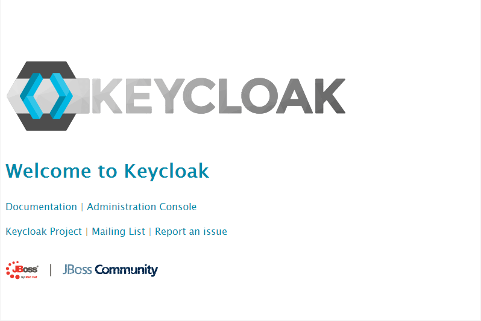

Setup Keycloak
In a microservices environment we need to have the possibility for SSO (Single Sign On). We're going to use Keycloak.
Enable SSL on Keycloak
To use SSL we have to create a keystore that contains our previously created SSL certificates. Therefore we connect to our master where the certificates are.
ssh root@5.189.173.45
On the server change in the directory with the certificates:
cd /etc/letsencrypt/live/disruptor.ninja/
Now we create a PKCS12 file based on this article.
openssl pkcs12 -export -in fullchain.pem -inkey privkey.pem -out pkcs.p12 -name test
Enter Export Password:
test
Verifying - Enter Export Password:
test
In the current folder there is a new file: pkcs.p12.
Copy this file on your local machine:
scp root@5.189.173.45:/etc/letsencrypt/live/disruptor.ninja/pkcs.p12 .
Now create a Java keystore based on this PKCS12 file:
keytool -importkeystore -deststorepass secret -destkeypass secret -destkeystore keycloak.jks -srckeystore pkcs.p12 -srcstoretype PKCS12 -srcstorepass test -alias test
Keycloak has persistent data therefore we have to mount this data somewhere. The easiest way to do that is over a node selector. A more advanced solution would be to use GlusterFS, Flocker, NFS or something similar.
If we use node selectors for our persistence then we have to label a node.
In this case this is 5.189.153.209.
kc label nodes vmi71989.contabo.host name=vmi71989
Now we connect to this server:
ssh root@5.189.153.209
And create an empty folder keycloakdata.
mkdir keycloakdata
In this folder we copy our keystore:
scp keycloak.jks root@5.189.153.209:/root/keycloakdata
Now we change the rights of the folder and its content:
chown -R 1000:1000 keycloakdata/
Now we've to tell Keycloak to use this keystore. Therefore I've created an own Docker image:
FROM jboss/keycloak:2.4.0.Final
MAINTAINER Robert Brem <brem_robert@hotmail.com>
RUN sed -i 's~<security-realms>~<security-realms><security-realm name="UndertowRealm"><server-identities><ssl><keystore path="/opt/jboss/keycloak/standalone/data/keycloak.jks" keystore-password="${env.KEYSTORE_PASSWORD}" /></ssl></server-identities></security-realm>~g' /opt/jboss/keycloak/standalone/configuration/standalone.xml
RUN sed -i 's~<server name="default-server">~<server name="default-server"><https-listener name="https" socket-binding="https" security-realm="UndertowRealm"/>~g' /opt/jboss/keycloak/standalone/configuration/standalone.xml
ENTRYPOINT [ "/opt/jboss/docker-entrypoint.sh" ]
CMD ["-b", "0.0.0.0"]
This Docker image is also available on Docker Hub
robertbrem\keycloak:1.0.3
It changes the standalone.xml based on this article
and uses an environment variable KEYSTORE_PASSWORD as keystore password.
Create a Kubernetes deployment
For our deployment we need a secret with the Keycloak user, the Keycloak password for the user and the password for our keystore:
kc create secret generic keycloak --from-literal=keycloak_user=admin --from-literal=keycloak_password=admin --from-literal=keystore_password=secret
Our deployment looks like that:
apiVersion: extensions/v1beta1
kind: Deployment
metadata:
name: keycloak
spec:
replicas: 1
template:
metadata:
labels:
name: keycloak
spec:
nodeSelector:
name: vmi71989
containers:
- name: keycloak
image: robertbrem/keycloak:1.0.3
env:
- name: KEYCLOAK_USER
valueFrom:
secretKeyRef:
name: keycloak
key: keycloak_user
- name: KEYCLOAK_PASSWORD
valueFrom:
secretKeyRef:
name: keycloak
key: keycloak_password
- name: KEYSTORE_PASSWORD
valueFrom:
secretKeyRef:
name: keycloak
key: keystore_password
volumeMounts:
- mountPath: /opt/jboss/keycloak/standalone/data
name: keycloakdata
ports:
- name: http
containerPort: 8080
- name: https
containerPort: 8443
volumes:
- name: keycloakdata
hostPath:
path: /root/keycloakdata
Start the deployment:
kc create -f deployment.yml
Create a Kubernetes service
To access Keycloak from outside the cluster we've to create a service:
apiVersion: v1
kind: Service
metadata:
name: keycloak
labels:
name: keycloak
spec:
ports:
- name: http
port: 8383
targetPort: 8080
nodePort: 30181
- name: https
port: 8443
targetPort: 8443
nodePort: 30182
selector:
name: keycloak
type: NodePort
Start the service:
kc create -f service.yml
Test if Keycloak is up and running:
https://disruptor.ninja:30182
